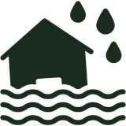

Enchentes
Lixo entope bueiros e alaga ruas.
Escolha o que você quer descartar e onde mora.
Lixo no lugar errado afeta a saúde e o bolso de todo mundo.

Lixo entope bueiros e alaga ruas.
Terrenos sujos juntam água parada.
Pilhas, óleo e remédios poluem solo e rios.
Aparelhos velhos guardam metais valiosos e tóxicos.